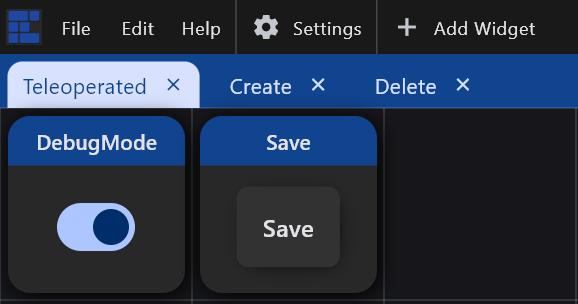
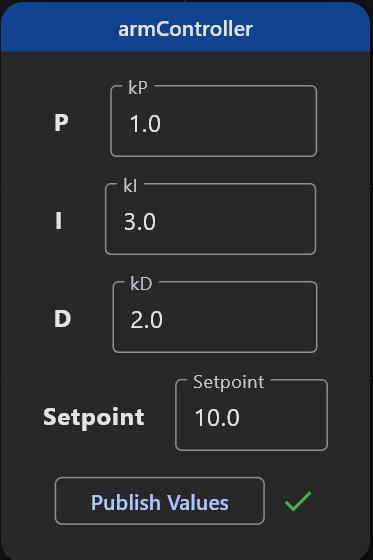
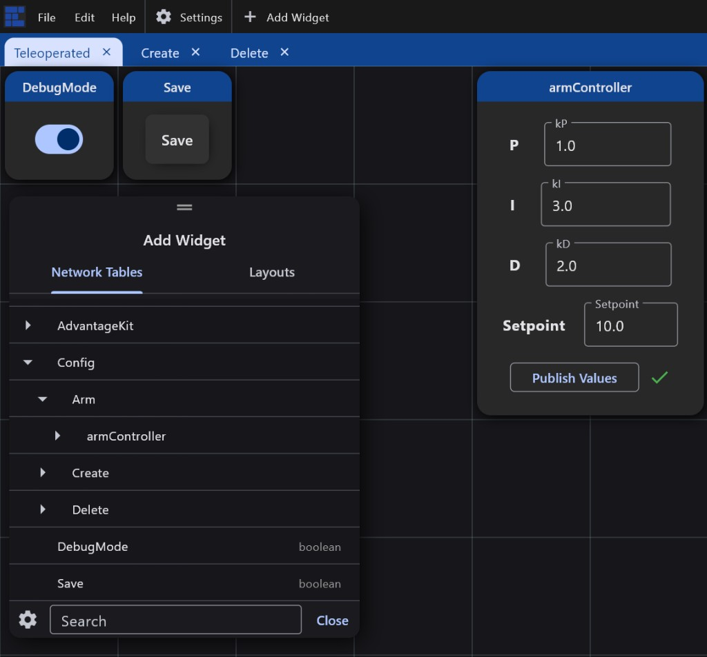

Turn on debug, edit scalars under /Config, and understand cache vs Save.
Import a layout with DebugMode and Save.
Use example-layout.json / elastic-layout.json (Teleoperated tab
has both widgets). See Elastic layout.
Connect Elastic to the robot or sim. For sim, the project README uses
host 127.0.27.1.
Enable DebugMode with the toggle bound to
/Config/DebugMode. You must not be attached to FMS — otherwise the library
stays in match mode.

Elastic Teleoperated tab — DebugMode and Save
Edit a scalar under /Config/... (number, boolean, string, or
array). Only leaves are editable over NT; folders and composite wrappers are structure.
Watch autosave. In debug, edits update the live document and write
config-cache.json. Look for
[Config] Saved config cache: in the console for the absolute path (in sim,
often under build/).
Promote with Save. Press the Save toggle/button
(/Config/Save) to write the live document into
robot-config.json. That is what match mode and the next cold boot will load
after you deploy.
Tuning a PID under /Config (here Arm/armController)
Publish Values is Elastic’s button — not ours.
Widgets that show a Publish Values button (PIDController and similar) are
Elastic’s own UI. Edits in those fields are not sent to NetworkTables until you
click Publish Values. Only then does Config see them and autosave
config-cache.json. That still does not write
robot-config.json — use our Save widget
(/Config/Save) to promote.

Click Publish Values before expecting Config / cache to update

Add Widget → Network Tables → expand Config to place widgets on your values
Cache ≠ ship. After Publish Values (if the widget needs it), tuning only
updates the cache until you press our Save (or trigger a layout-file promote). Commit and
deploy robot-config.json for the pit/match robot.